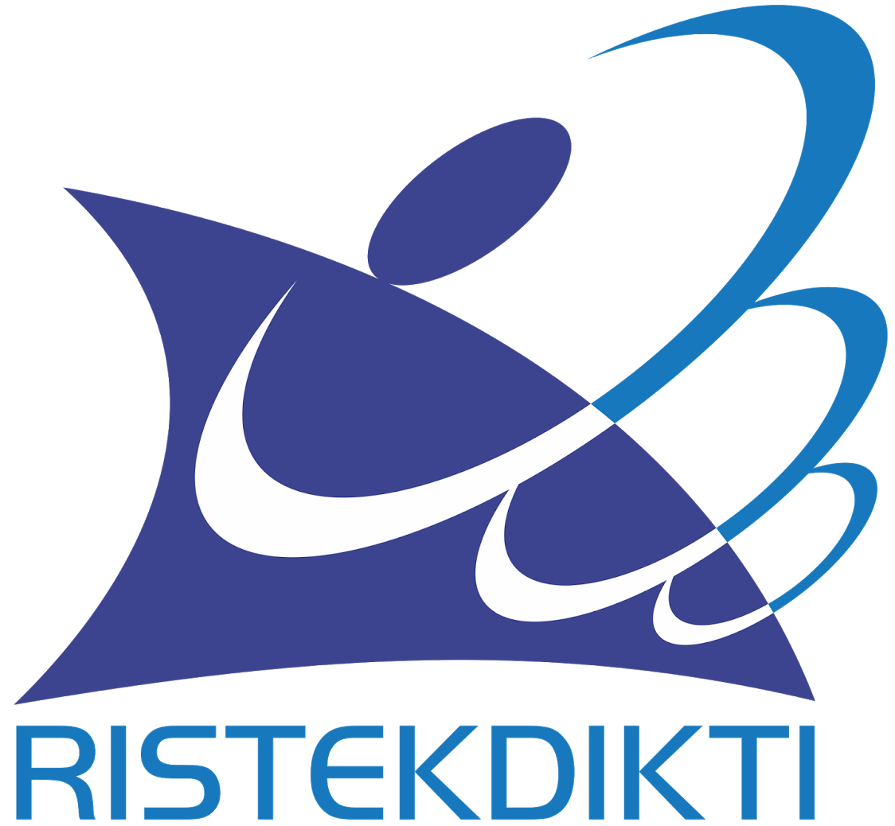

Kami bekerja sama dengan institusi top Indonesia



Universitas Akademik Website telah diakui oleh BAN-PT dan mendapatkan bintang 4 atau akreditasi institusi “B”, yang memiliki 4 program Diploma yaitu D4 Transportasi Laut, D3 Manajemen Pelabuhan, D3 Permesinan Kapal dan D3 Studi Nautika.
Menjadikan lulusan atau alumni siap bekerja dan menjadi pengusaha bisang perkapalan serta menjadikan lulusan atau alumni yang berbakat, berdedikasi, disiplin, sopan santun dan unggul serta bertanggung jawab.
Taruna/i Aktif
Sertifikat COP/COC
Alumni
Universitas Akademik Website
TIm ICT Universitas Akademik Website adalah sebuah tim kelompok kecil yang menangagi teknologi informasi dan jaringan di lingkungan Universitas Akademik Website, dengan terbentuknya tim ICT ini diharapkan teknologi informasi dari sisi aplikasi website dan mobile akan pelan-pelan dibuat sehingga memudahkan antra pengurusan administrasi, dosen dan taruna/i.